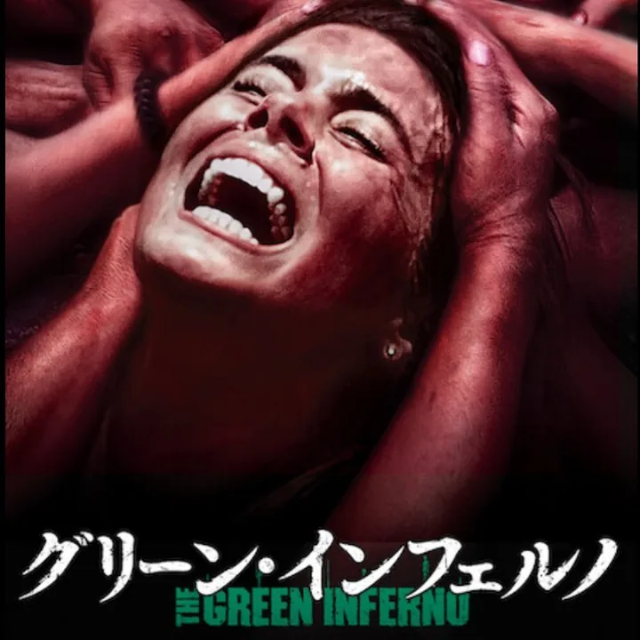
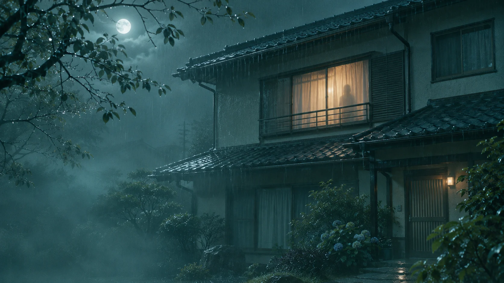
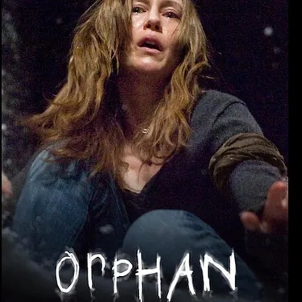

特集・ランキング
今週の特集
逃げ場のない映画６選
海、密室、地上600メートル。どこなら耐えられる？ 特集を読む ↗
ホラー・スリラー映画から各5本。同点は同順位で、最近の投稿から掲載。
ホラみのおすすめ順
1呪詛4.5/51死霊館 悪魔のせいなら、無罪。4.5/5 3オキシジェン4/53スピーク・ノー・イーブル 異常な家族4/5
3オキシジェン4/53スピーク・ノー・イーブル 異常な家族4/5 3Tu Yaa Main4/5
3Tu Yaa Main4/5ホラー度が高い順

1グリーン・インフェルノ5/52呪詛4.5/53死霊館 悪魔のせいなら、無罪。4/5 3ジェーンドウの解剖4/5
3ジェーンドウの解剖4/5 5マリグナント 狂暴な悪夢3.5/5
5マリグナント 狂暴な悪夢3.5/5特集を読む
逃げ場のない映画６選 ↗
家の中に、誰かいる。 ↗
子ども部屋から始まる悪夢 ↗ 怖い映画のあとに、ひと息 ↗
怖い映画のあとに、ひと息 ↗